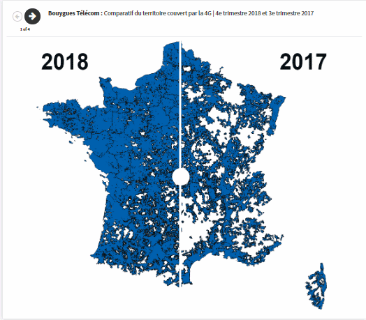
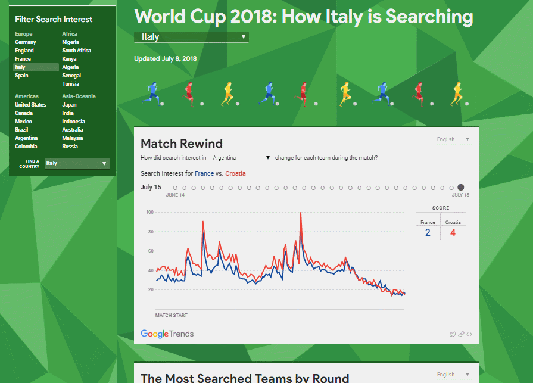
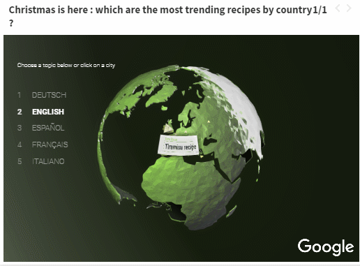
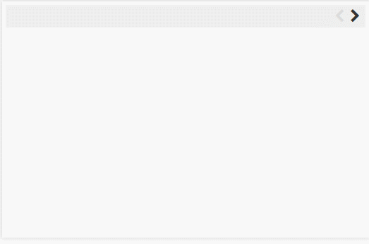
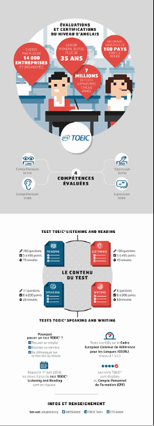
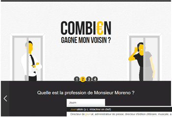

Portfolio
-
La Gazette des communes

- Writing and updating technical briefs for over 200 open data indicators
- Close collaboration with the developpement team (Front and back end)
- Exploratory data analysis
- Editorial insights
-


- Data analysis using R
- Data vizualisations using Flourish and Carto
-

- Data analysis using R
- Data visualisation using Carto, Datawrapper and Tableau Software
-
Polygraph

- Editorial insights for creating the charts with the Polygraph team
- Data modelling of the charts by using Google Trends API
- Communications and localisation management
-
Google News Lab

- Project management
- Editorial insights for creating the charts with the Wedodata team
- Daily automated data extraction through an R script and a cronjob
-

- Data analysis and translations
- Datavizualisation using Flourish
-

- Code and execution (JQuery)
- Automated data extraction through an R script
-
Self-made projects

- Scrapping of data
- Data analysis
- Data Vizualisation (Flourish tool)
-

- Scrapping
- Data analysis
- Data vizualisation using Flourish
-
Wedodata

- Editorial research of data for choosing the best angles for the infographics
- Scrapping and data analysis
-

- Data cleaning using Open Refine
- Exploratory data analysis using R
- Finding of insights and angles for the infographics
-

- Content management for over 100 infographics about the biggest companies in France.
- Fact checking and sourcing of figures in company reports.
-
AskMedia

- Research, data analysis
- Exploratory data analysis to find insights in data
-
Sciences Po

- Winner of the 2014 Google - Sciences Po award of innovation in journalism
- Project management
- Webdesign
-
Projects in spanish

- Data analysis
- Vizualisation (Tableau software)